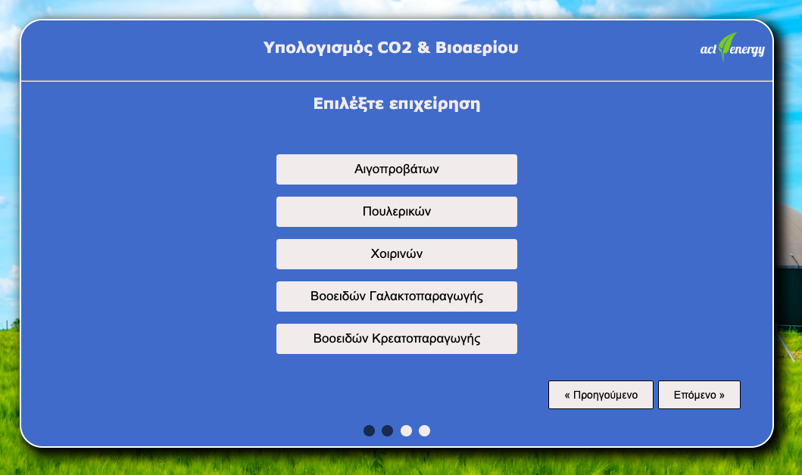
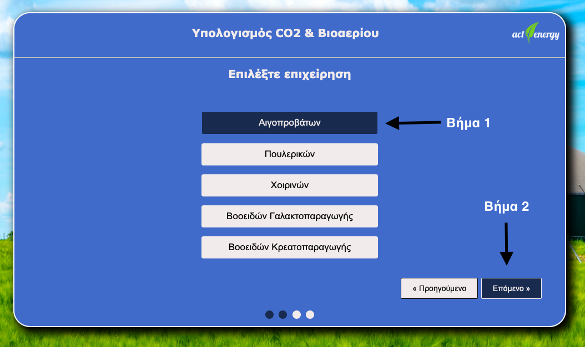
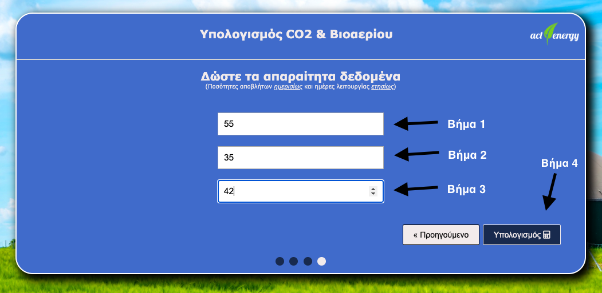

Στο 1ο βήμα της φόρμας ο χρήστης επιλέγει το είδος της επιχείρησης που τον ενδιαφέρει.
Διατίθενται δύο κεντρικές επιλογές.
Η πρώτη αφορά τις μεταποιητικές επιχειρήσεις
και η δεύτερη τις επιχειρήσεις εκτροφής ζώων.
Έστω ότι ο χρήστης επιλέξει το είδος επιχείρησης "Εκτροφή ζώων":

Μετά την επιλογή του ο χρήστης μεταφέρεται στο δεύτερο βήμα της φόρμας στο οποίο καλείται να επιλέξει την επιχείρηση εκτροφής ζώων που τον ενδιαφέρει(πχ πουλερικά, χοιρινά, βοοειδή, κλπ):
Αν ο χρήστης αλλάξει γνώμη και θελήσει να γυρίσει πίσω και να επιλέξει διαφορετικό είδος επιχείρησης, αυτό μπορεί να το πετύχει κάνοντας κλικ στο κουμπί "Προηγούμενο". Σε αυτήν την περίπτωση θα έχει να επιλέξει μεταξύ διαφορετικών ειδών μεταποιητικών επιχειρήσεων (πχ παραγωγή ελαιολάδου, τυροκόμιση γάλακτος, κλπ):

Εστω ότι ο χρήστης επιλέξει την επιχείρηση εκτροφής Αιγοπροβάτων:
Μετά την
επιλογή του ο χρήστης μεταφέρεται στο τρίτο βήμα της φόρμας στο οποίο καλείται να
συμπληρώσει τα παρακάτω δεδομένα:
(α) Αριθμός εκτρεφόμενων ζώων
(β) Παραγόμενες
ποσότητες αποβλήτων
(γ) Ημέρες λειτουργίας της επιχείρησης.
Εστω ότι ο χρήστης συμπλήρωσει πως έχει 66 Αιγοπρόβατα απ'τα οποία παράγονται ημερησίως 55 m3 ποσότητες αποβλήτων και η επιχείρηση αυτή λειτούργησε για 42 ημέρες:
Ο αριθμός εκτρεφόμενων ζώων που εισαγάγει ο χρήστης πρέπει να είναι >0
Ο αριθμός που που εισαγάγει ο χρήστης και αφορά τις παραγόμενες
ποσότητες αποβλήτων πρέπει να είναι >0
Ο αριθμός που εισαγάγει ο χρήστης και αφορά τις ημέρες λειτουργίας της επιχείρησης πρέπει να είναι >0 και <365
Αφού ο χρήστης πατήσει το κουμπί του υπολογισμού για τα δεδομένα που έδωσε τότε μεταφέρεται στο 4ο βήμα της φόρμας στο οποίο μπορεί να δει τα αποτελέσματα βάση των επιλογών που έκανε. Αν ο χρήστης επιθυμεί να ξαναρχίσει από την αρχή την συμπλήρωση της φόρμας τότε μπορεί να πατήσει το κουμπί "Ξεκίνα πάλι"

Υπολογισμός δυναμικού παραγωγής βιοαερίου:
Το δυναμικό παραγωγής βιοαερίου για τα εξεταζόμενα απόβλητα υπολογίζεται από την
παρακάτω εξίσωση:
QBG-d = QW-d * Y(BG/W)
Όπου:
QBG-d -> η ημερήσια παραγωγή βιοαερίου (m3 biogas/day) (το υπολογίζει η εφαρμογή)
QW-d -> η ημερήσια ποσότητα αποβλήτων (m3 waste/day) (το συμπληρώνει ο χρήστης)
Y(BG/W) -> ο συντελεστής ανάκτησης βιοαερίου των εξεταζόμενων αποβλήτων (m3 biogas / m3 waste) (το επιλέγει η εφαρμογή)
Για την περίπτωση του συντελεστή ανάκτησης βιοαερίου (Y(BG/W)) η εφαρμογή λαμβάνει
υπόψη τα παρακάτω δεδομένα:
| Είδος Επιχείρησης -> "Εκτροφή ζώων" | |
|---|---|
| Επιχείρηση | Συντελεστής ανάκτησης βιοαερίου |
| Αιγοπροβάτων | 150 m3/tn αποβλήτου |
| Πουλερικών | 200 m3/tn αποβλήτου |
| Χοιρινών | 6 m3/m3 αποβλήτου |
| Βοοειδών γαλακτο-παραγωγής | 20 m3/m3 αποβλήτου |
| Βοοειδών κρεατο-παραγωγής | 50 m3/tn αποβλήτου |
| Είδος Επιχείρησης -> "Μεταποίηση" | |
|---|---|
| Επιχείρηση | Συντελεστής ανάκτησης βιοαερίου |
| Παραγωγής Ελαιολάδου | 70 m3/tn αποβλήτου |
| Τυροκόμισης Γάλακτος | 30 m3/m3 αποβλήτου |
| Προιόντα Αλευρόμυλων | 800 m3/tn αποβλήτου |
| Επεξεργασία Κρέατος | 80 m3/tn αποβλήτου |
Υπολογισμός μείωσης εκπομπών CO2:
Η ετήσια μείωση των εκπομπών CO2 από την αξιοποίηση του παραγόμενου βιοαερίου ως
υποκατάστατο συμβατικών ορυκτών καυσίμων μπορεί να υπολογιστεί από την εξίσωση:
GHG(kgCO2/year) = 1.87 * Q BG-year * CH4 * T
Όπου
GHG = ετήσιες ποσότητες CO2 που αποφεύγονται (kg/year) (το υπολογίζει η εφαρμογή)
QBG-d = η ετήσια ποσότητα βιοαερίου που παράγεται (m3/year) (το υπολογίζει η εφαρμογή)
CH4 = το ποσοστό του μεθανίου στο βιοαέριο (%) (το επιλέγει η εφαρμογή)
T = ο ετήσιος αριθμός ημερών λειτουργίας της εγκατάστασης (το επιλέγει ο χρήστης)
Το ποσοστό του βιοαερίου σε μεθάνιο για τα εξεταζόμενα απόβλητα φαίνεται στους
παρακάτω Πίνακες:
| Είδος Επιχείρησης -> "Εκτροφή ζώων" | |
|---|---|
| Επιχείρηση | Ποσοστό μεθανίου στο βιοαέριο (%) |
| Αιγοπροβάτων | 55% |
| Πουλερικών | 60% |
| Χοιρινών | 55% |
| Βοοειδών γαλακτο-παραγωγής | 60% |
| Βοοειδών κρεατο-παραγωγής | 55% |
| Είδος Επιχείρησης -> "Μεταποίηση" | |
|---|---|
| Επιχείρηση | Ποσοστό μεθανίου στο βιοαέριο (%) |
| Παραγωγής Ελαιολάδου | 65% |
| Τυροκόμισης Γάλακτος | 50% |
| Προιόντα Αλευρόμυλων | 60% |
| Επεξεργασία Κρέατος | 70% |
Υπολογισμός κόστους κατασκευής:
Το κόστος κατασκευής της εγκατάστασης παραγωγής βιοαερίου υπολογίζεται από την
εξίσωση:
CAPEX = a * VDG
VDG = QBG-d / 1.35
a= -40*ln(VDG ) + 1000
Όπου:
CAPEX -> το κόστος κατασκευής (€)
VDG -> ο όγκος της δεξαμενής αναερόβιας χώνευσης (m3 ) (τον υπολογίζει η εφαρμογή)
QBG-d -> η ημερήσια παραγωγή βιοαερίου (m3/day) (την υπολογίζει η εφαρμογή)
a -> ο συντελεστής μοναδιαίου κόστους κατασκευής της εγκατάστασης (€/m3 ) (τον
υπολογίζει η εφαρμογή)
Υπολογισμός κόστους κατανάλωσης ηλεκτρικής ενέργειας:
Το ετήσιο κόστος κατανάλωσης ηλεκτρικής ενέργειας από την εξεταζόμενη εγκατάσταση
υπολογίζεται από την εξίσωση:
OPEX electr (€/year) = 20*(kW)*(T)*(C)
kW = [-0,008*ln(V DG ) + 0,082]*V DG
VDG = QBG-d / 1.35
Όπου:
OPEX electr -> το ετήσιο κόστος κατανάλωσης ηλεκτρικής ενέργειας (€/year)
kW -> η εγκατεστημένη ισχύς του μηχανολογικού εξοπλισμού (kW)
C -> το κόστος της ηλεκτρικής ενέργειας (= 0.15 € / kWh-el) (το συμπληρώνει η εφαρμογή ή
ο χρήστης)
T -> ο αριθμός ημερών λειτουργίας της εγκατάστασης (το συμπληρώνει ο χρήστης)
VDG -> ο όγκος της δεξαμενής αναερόβιας χώνευσης (m3) (τον υπολογίζει η εφαρμογή)
QBG-d -> η ημερήσια παραγωγή βιοαερίου (m3/day) (την υπολογίζει η εφαρμογή)
Υπολογισμός κόστους συντήρησης μηχανολογικού εξοπλισμού:
Το ετήσιο κόστος συντήρησης του εγκατεστημένου μηχανολογικού εξοπλισμού (OPEX
mech, €) μπορεί να υπολογιστεί από την εξίσωση:
OPEX mech (€/year) = -0,0046*(VDG ) 2 + 27,5*VDG - 34,8
VDG = QBG-d / 1.35
Όπου:
OPEX mech -> το ετήσιο κόστος συντήρησης μηχανολογικού εξοπλισμού (€/year)
VDG -> ο όγκος της δεξαμενής αναερόβιας χώνευσης (m3 ) (τον υπολογίζει η εφαρμογή)
QBG-d -> η ημερήσια παραγωγή βιοαερίου (m3/day) (την υπολογίζει η εφαρμογή)
Υπολογισμός ετήσιου κόστους ελέγχου καλής λειτουργίας:
Το ετήσιο κόστος ελέγχου καλής λειτουργίας της εγκατάστασης μπορεί υπολογίζεται από
την εξίσωση:
OPEX monitor (€/year) = 1800*ln(VDG) – 5300
VDG = QBG-d / 1.35
Όπου:
OPEX monitor -> το ετήσιο κόστος ελέγχου καλής λειτουργίας της εγκατάστασης (€/year)
VDG -> ο όγκος της δεξαμενής αναερόβιας χώνευσης (m3 ) (τον υπολογίζει η εφαρμογή)
QBG-d -> η ημερήσια παραγωγή βιοαερίου (m3/day) (την υπολογίζει η εφαρμογή)
Υπολογισμός ετήσιου κόστους προσωπικού:
Το ετήσιο κόστος αμοιβών προσωπικού για τη λειτουργία της εγκατάστασης υπολογίζεται
από την εξίσωση:
OPEX labor (€/year) = 10 000 ln(V DG ) – 50 000
VDG = QBG-d / 1.35
Όπου:
OPEX labor -> ετήσιο κόστος αμοιβών προσωπικού (€/year)
VDG -> ο όγκος της δεξαμενής αναερόβιας χώνευσης (m3 ) (τον υπολογίζει η εφαρμογή)
Αν VDG < 300 m3 τότε OPEX labor = 0
Υπολογισμός κόστους λειτουργίας:
Το συνολικό ετήσιο κόστος λειτουργίας της επιχείρησης υπολογίζεται από την εξίσωση:
OPEX total (€/year) = OPEX electr + OPEX mech + OPEX monitor + OPEX labor
Όπου:
OPEX electr -> το ετήσιο κόστος κατανάλωσης ηλεκτρικής ενέργειας (€/year)
OPEX mech -> το ετήσιο κόστος συντήρησης μηχανολογικού εξοπλισμού (€/year)
OPEX monitor -> το ετήσιο κόστος ελέγχου καλής λειτουργίας της εγκατάστασης (€/year)
OPEX labor -> ετήσιο κόστος αμοιβών προσωπικού (€/year)